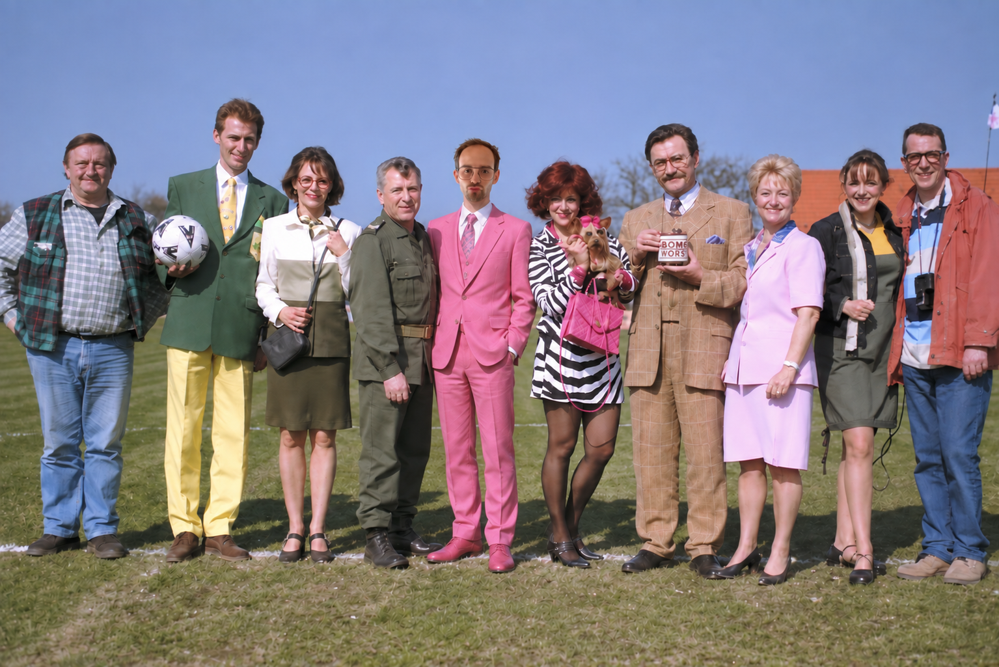

Same legend, different status
Joachims
Vrijgezellenfeest
Wie is Joachim als de boeken dichtgaan en de les erop zit?
Same legend, different status
Wie is Joachim als de boeken dichtgaan en de les erop zit?
Zaak J.
Onderzoek lopende
Welkom, Joachim.
De boeken zijn dicht. De les is gedaan.
Vanaf hier weet jij evenveel als wij willen dat je weet.
Voor we verder kunnen, hebben we enkele vragen.
Sommige zijn praktisch.
Sommige zijn belangrijk.
Over de rest hoef je je voorlopig geen zorgen te maken.
Antwoord eerlijk.
Alles wat u antwoordt, kan en zal tegen u gebruikt worden.
Bewijsstuk 01/08
Je antwoord wordt toegevoegd aan het dossier.
De antwoorden konden niet worden verzonden. Probeer het opnieuw.
Dossier Joachim · Eindverslag
Uw verklaring werd geregistreerd.
De ploeg beschikt nu over voldoende informatie en zal zich hierover beraden.
Uitspraak: nog niet bekend
Datum zitting: GECLASSIFICEERD
Locatie: GECLASSIFICEERD
Programma: leuke poging, Joachim.
Tot nader order hoeft u niets te ondernemen.
Vonnis volgt.
Door uw verklaring in te dienen gaat u akkoord met voorwaarden die u om evidente redenen niet werden meegedeeld. De Ploeg behoudt zich het recht voor deze voorwaarden zonder voorafgaande kennisgeving te wijzigen, uit te breiden of volledig te verzinnen.
Geautoriseerde toegang
Deze zone is uitsluitend voor leden van de ploeg.
Wat hier staat, blijft hier.
Joachim weet voorlopig genoeg.
Laten we dat zo houden.
Interne omgeving · Geautoriseerd
Welkom bij de ploeg.
Status operatie
De ploeg
Laat even weten of we op je kunnen rekenen.
0 bevestigd · 0 twijfelaars · 0 afwezig
De plannen
Bestemming, activiteiten, vervoer en programma worden hier verder aangevuld.
Andere ideeën
Heeft iemand een goed idee voor Operatie Joachim? Zet het hier op tafel.
Joachims meme corner
Upload hier jullie beste Joachim-memes. De ploeg kijkt mee.

Joachims guilty pleasure
Dossier Joachim
Joachim heeft 0/8 bewijsstukken afgelegd.
De antwoorden verschijnen hier zodra Joachim zijn verklaring heeft ingediend.
Commandocentrum
Toegang uitsluitend voor de organisatie van Operatie Joachim.
TOEGANG VERLEEND
Het commandocentrum is geopend.
Hier kunnen planning, deelnemersbeheer, kosten, vervoer en ideeën beheerd worden.
Alleen voor organisatoren
Toegang verleend.
Hier kunnen planning, deelnemersbeheer, kosten, vervoer en ideeën beheerd worden.
Deze omgeving is uitsluitend voor de organisatie. Bespreek niets met het onderwerp van dit dossier.